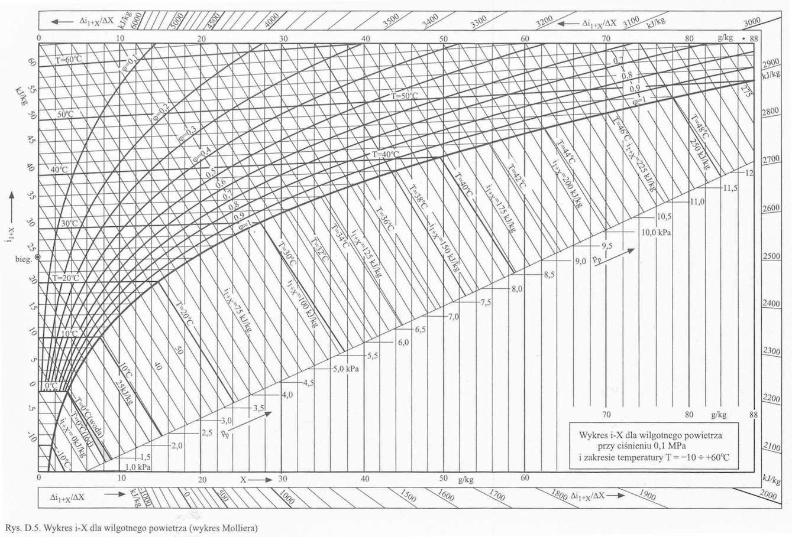
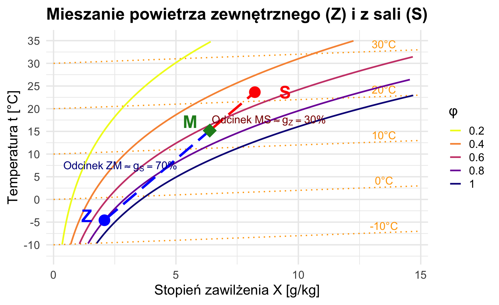

W13: Procesy Klimatyzacyjne
Projektowanie procesów na wykresie h-X
prof. UPP dr hab. inż. Marek Urbaniak
Wydział Inżynierii Środowiska i Inżynierii Mechanicznej


Czym jest klimatyzacja?
Proces uzdatniania powietrza polegający na nadaniu mu odpowiednich parametrów fizykochemicznych w celu zapewnienia komfortu przebywania ludzi lub spełnienia wymagań technologicznych.
Cztery filary nowoczesnej klimatyzacji:
- Temperatura – ogrzewanie (zima) i chłodzenie (lato) powietrza.
- Wilgotność – nawilżanie w okresach suchych, osuszanie przy nadmiarze wilgoci.
- Czystość – filtracja z pyłów, alergenów, smogu (filtry wstępne i dokładne).
- Prędkość przepływu – wymuszenie ruchu powietrza w strefie przebywania ludzi tak, aby zapobiec przeciągom, ale zapewnić odpowiednią świeżość.
Definicja
Wentylacja wymienia powietrze zużyte na świeże, natomiast klimatyzacja dodatkowo kontroluje parametry termodynamiczne i czystość powietrza niezależnie od warunków zewnętrznych.
Parametry komfortu cieplnego
Komfort cieplny to stan zadowolenia człowieka z warunków środowiska termicznego. Zależy on zarówno od parametrów powietrza, jak i czynników osobistych (odzież, aktywność fizyczna).
Definicja
PMV (Predicted Mean Vote) – wskaźnik przewidywanej średniej oceny wrażeń cieplnych grupy ludzi w skali od -3 (bardzo zimno) do +3 (bardzo gorąco). Optymalny zakres to od -0.5 do +0.5.
PPD (Predicted Percentage Dissatisfied) – wskaźnik określający przewidywany procent osób niezadowolonych z warunków termicznych. Jest bezpośrednio powiązany z PMV (dla PMV = 0, PPD wynosi 5%).
- Czynniki środowiskowe: temperatura powietrza, temperatura promieniowania przegród, wilgotność względna, prędkość ruchu powietrza.
- Czynniki indywidualne: izolacyjność odzieży (wyrażana w clo), tempo metabolizmu (wyrażana w met).
Centrala Wentylacyjna (AHU)
Centrala wentylacyjno-klimatyzacyjna (ang. Air Handling Unit – AHU) to zintegrowane urządzenie służące do przygotowania i dystrybucji powietrza. Każda sekcja centrali odpowiada za określoną przemianę termodynamiczną.
- Filtry: Zapewniają odpowiednią czystość powietrza nawiewanego.
- Rekuperator: Odzyskuje ciepło z powietrza wywiewanego z budynku.
- Chłodnica i Nagrzewnica: Odpowiadają za regulację temperatury.
- Nawilżacz: Zwiększa wilgotność powietrza w okresach zimowych.
- Wentylator: Pokonuje opory przepływu w sieci kanałów.
Przypomnienie Wykresu h-x (Molliera)
Wykres h-x (często nazywany wykresem Molliera) jest podstawowym narzędziem inżynierskim do projektowania i analizy procesów klimatyzacyjnych.
- Oś odciętych (x): Zawartość wilgoci (stopień zawilżenia) wyrażona w g pary wodnej na kg suchego powietrza [g/kg].
- Oś rzędnych (t): Temperatura powietrza [\(^\circ C\)].
- Linie ukośne (h = const): Linie stałej entalpii powietrza wilgotnego [kJ/kg].
- Krzywe ( \(\varphi\) = const): Wilgotność względna [%]. Granicą wykresu jest linia \(\varphi = 100\%\) (linia nasycenia).
Każdy punkt na wykresie jednoznacznie określa stan powietrza wilgotnego. Dowolna przemiana w urządzeniach klimatyzacyjnych może być przedstawiona jako wektor na tym wykresie.
Wykres h-x (Molliera)

Wykres i-X dla wilgotnego powietrza przy ciśnieniu 0,1 MPa (wykres Molliera)
Ogrzewanie (Nagrzewnica)
Ogrzewanie powietrza w nagrzewnicy realizowane jest przy stałej zawartości wilgoci. Ponieważ nie dodajemy ani nie odbieramy pary wodnej, proces ten na wykresie h-x przebiega pionowo w górę.
Definicja
Proces: \(x = const\) (przemiana bez zmiany wilgotności bezwzględnej). Efekt: Wzrost temperatury (\(t \uparrow\)), wzrost entalpii (\(h \uparrow\)), ale spadek wilgotności względnej (\(\varphi \downarrow\)).
Równanie bilansu energii (moc nagrzewnicy):
\[\dot{Q} = \dot{m}_{s.p.} \cdot (h_2 - h_1) \quad [\text{kW}]\]
Gdzie \(\dot{m}_{s.p.}\) to masowe natężenie przepływu suchego powietrza [kg/s].
Chłodzenie bez wykraplania
Chłodzenie bez wykraplania (tzw. chłodzenie suche) zachodzi wtedy, gdy temperatura powierzchni chłodnicy (\(t_{ch}\)) jest wyższa niż temperatura punktu rosy chłodzonego powietrza (\(t_{ch} > t_R\)).
- Proces: \(x = const\) (suchy spadek temperatury).
- Kierunek na h-x: Pionowo w dół.
- Efekt: Temperatura spada (\(t \downarrow\)), entalpia spada (\(h \downarrow\)), a wilgotność względna rośnie (\(\varphi \uparrow\)).
- Ograniczenie: Chłodzenie suche możemy prowadzić tylko do granicy nasycenia (\(\varphi = 100\%\)). Dalsze obniżanie temperatury wywoła skraplanie pary wodnej.
Równanie bilansu energii:
\[\dot{Q}_c = \dot{m}_{s.p.} \cdot (h_1 - h_2) \quad [\text{kW}]\]
Moc chłodnicza chłodnicy suchej służy wyłącznie do obniżenia temperatury powietrza (schładzanie jawne).
Chłodzenie z osuszaniem
Jeżeli temperatura powierzchni chłodnicy jest niższa od temperatury punktu rosy powietrza (\(t_{ch} < t_R\)), następuje kondensacja pary wodnej na lamelach chłodnicy.
Definicja
Proces: Spadek temperatury (\(t \downarrow\)) połączony ze spadkiem zawartości wilgoci (\(x \downarrow\)). Powietrze osiąga stan nasycenia i przemieszcza się wzdłuż linii \(\varphi = 100\%\).
Strumień wykraplanej wody (kondensatu):
\[\dot{m}_k = \dot{m}_{s.p.} \cdot \frac{x_1 - x_2}{1000} \quad [\text{kg/s}]\]
Chłodzenie z osuszaniem – bilans energii
Pełny bilans energii chłodnicy mokrej:
\[\dot{Q}_c = \dot{m}_{s.p.} \cdot (h_1 - h_2) - \dot{m}_k \cdot h_k \quad [\text{kW}]\]
Gdzie \(h_k\) to entalpia skroplin (często pomijana w przybliżonych obliczeniach z uwagi na małą wartość).
Nawilżanie Parowe
Nawilżanie parowe polega na bezpośrednim wtrysku pary wodnej (z generatora pary lub sieci) do strumienia powietrza przepływającego przez centralę.
- Charakterystyka procesu: Ponieważ wtryskiwana para ma wysoką temperaturę (zazwyczaj \(100^\circ C\)), proces ten przebiega niemal izotermicznie (\(t \approx const\)).
- Kierunek na h-x: W prawo, lekko skośnie w górę (przyrost wilgoci \(x \uparrow\) oraz entalpii \(h \uparrow\)).
- Bilans wilgoci:
\[\dot{m}_p = \dot{m}_{s.p.} \cdot \frac{x_2 - x_1}{1000} \quad [\text{kg/s}]\]
Nawilżanie Parowe – bilans energii
- Wzrost entalpii powietrza:
\[h_2 = h_1 + \frac{x_2 - x_1}{1000} \cdot h_p \quad [\text{kJ/kg}]\]
gdzie \(h_p\) to entalpia pary wodnej (\(\approx 2680\) kJ/kg).
Przykład
Nawilżanie parowe jest bardzo higieniczne i łatwe w regulacji, dlatego stosuje się je powszechnie w klimatyzacji szpitalnej i laboratoryjnej. Wymaga jednak dużej ilości energii elektrycznej do wytworzenia pary.
Nawilżanie Wodne
Nawilżanie wodne (adiabatyczne) polega na rozpyleniu drobnych kropelek ciekłej wody w strumieniu powietrza. Woda odparowuje, pobierając ciepło z powietrza.
Definicja
Proces: \(h \approx const\) (izoentalpowy). Ciepło jawne powietrza zamieniane jest na ciepło utajone parowania wody. Efekt: Spadek temperatury powietrza (\(t \downarrow\)), przy jednoczesnym wzroście wilgotności (\(x \uparrow\)).
- Zastosowanie: Tzw. chłodzenie wyparne (ewaporacyjne). Pozwala na znaczne obniżenie temperatury powietrza w lecie przy minimalnym zużyciu energii (tylko zasilanie pompy wody).
- Granica procesu: Teoretyczną granicą chłodzenia adiabatycznego jest temperatura termometru wilgotnego (\(t_w\)), odpowiadająca punktowi przecięcia izoentalpy z linią \(\varphi = 100\%\).
Cel mieszania powietrza
W systemach wentylacji i klimatyzacji rzadko uzdatnia się wyłącznie powietrze zewnętrzne. Najczęściej miesza się świeże powietrze zewnętrzne (Z) z powietrzem obiegowym (S) pobranym z pomieszczenia.
Główne cele recyrkulacji (mieszania):
- Oszczędność energii – powietrze z pomieszczenia ma zazwyczaj temperaturę znacznie bliższą parametrom komfortu niż powietrze zewnętrzne (zarówno zimą, jak i latem). Jego ponowne użycie redukuje moc nagrzewnic i chłodnic.
- Utrzymanie minimalnego strumienia powietrza świeżego – ze względów higienicznych do pomieszczenia musi trafiać określona ilość świeżego tlenu na osobę. Mieszając je z obiegowym, możemy dostarczyć wymaganą ilość powietrza świeżego, zachowując jednocześnie wysoki wydatek powietrza nawiewanego dla zapewnienia odpowiedniej cyrkulacji.
Mieszanie na wykresie h-x
Po zmieszaniu powietrza zewnętrznego (Z) o masie \(\dot{m}_Z\) z obiegowym (S) o masie \(\dot{m}_S\), punkt mieszaniny (M) leży na prostej Z-S.
Zasada dźwigni: \[\frac{\dot{m}_Z}{\dot{m}_S} = \frac{\text{odcinek } SM}{\text{odcinek } ZM}\]
Parametry mieszaniny (średnia ważona): \[x_M = g_Z \cdot x_Z + g_S \cdot x_S \quad [\text{g/kg}]\] \[h_M = g_Z \cdot h_Z + g_S \cdot h_S \quad [\text{kJ/kg}]\]
gdzie \(g_Z\), \(g_S\) to udziały masowe.

Odzysk ciepła (Rekuperacja)
Odzysk ciepła (rekuperacja) to proces przenoszenia energii termicznej z ciepłego strumienia powietrza usuwanego (wywiewanego) do zimnego strumienia powietrza świeżego (nawiewanego), realizowany w wymienniku ciepła bez bezpośredniego kontaktu obu strumieni powietrza.
- Zasada działania: Powietrze wywiewane oddaje ciepło ściankom wymiennika, od których następnie nagrzewa się zimne powietrze zewnętrzne.
- Wymienniki krzyżowe i przeciwprądowe: Przenoszą wyłącznie ciepło jawne (brak wymiany wilgoci).
- Regeneratory obrotowe: Posiadają wirnik pokryty substancją higroskopijną, dzięki czemu odzyskują zarówno ciepło (jawne), jak i wilgoć (ciepło utajone).
Definicja
Odzysk ciepła pozwala na podgrzanie powietrza zewnętrznego w okresie zimowym o kilkanaście, a nawet kilkadziesiąt stopni bez użycia energii zewnętrznej (np. z kotła lub pompy ciepła).
Efektywność odzysku ciepła
Podstawowym parametrem określającym sprawność centrali rekuperacyjnej jest sprawność temperaturowa odzysku ciepła (\(\eta_T\)).
Wzór na sprawność temperaturową (po stronie nawiewu):
\[\eta_T = \frac{t_{n2} - t_{n1}}{t_{w1} - t_{n1}} \cdot 100\%\]
Gdzie:
- \(t_{n1}\) – temperatura powietrza zewnętrznego przed wymiennikiem [\(^\circ C\)],
- \(t_{n2}\) – temperatura powietrza nawiewanego po przejściu przez wymiennik [\(^\circ C\)],
- \(t_{w1}\) – temperatura powietrza wywiewanego z pomieszczenia przed wymiennikiem [\(^\circ C\)].
Efektywność odzysku ciepła – przykład
Przykład
Jeśli zimą powietrze zewnętrzne ma temperaturę \(-5^\circ C\), w pokoju jest \(+20^\circ C\), a sprawność rekuperatora wynosi \(80\%\), wówczas temperatura powietrza za rekuperatorem wyniesie:
\[t_{n2} = -5 + 0.8 \cdot (20 - (-5)) = \mathbf{15^\circ C}\]
Powietrze zostało podgrzane o \(20 \, \text{K}\) za darmo!
Zyski ciepła i wilgoci
Projektowanie klimatyzacji pomieszczenia wymaga precyzyjnego zbilansowania dopływu energii i wilgoci ze wszystkich źródeł.
- Zyski ciepła jawnego (\(\dot{Q}_j\)): Powodują bezpośrednią zmianę temperatury powietrza.
- Źródła: promieniowanie słoneczne przez okna, przenikanie przez ściany, ciepło od oświetlenia, urządzeń elektrycznych (komputery, silniki), ciepło jawne oddawane przez ludzi.
- Zyski ciepła utajonego (\(\dot{Q}_u\)): Związane z parowaniem wody (wpływają na wzrost wilgoci bez zmiany temperatury suchej).
- Źródła: wilgoć wydychana przez ludzi, procesy technologiczne, gotowanie, suszenie.
- Zyski wilgoci (\(\dot{W}\)): Masowy strumień pary wodnej emitowany w pomieszczeniu [kg/s] lub [g/h].
Współczynnik kierunkowy przemiany
Współczynnik kierunkowy przemiany w pomieszczeniu (\(\epsilon\)) określa stosunek całkowitego zysku ciepła (entalpii) do zysku wilgoci w pomieszczeniu.
Wzór na współczynnik \(\epsilon\):
\[\epsilon = \frac{\Delta H}{\Delta x} = \frac{\dot{Q}_j + \dot{Q}_u}{\dot{W}} \quad \left[\frac{\text{kJ}}{\text{kg}}\right]\]
Gdzie:
- ( _j + _u ) – całkowite zyski ciepła w pomieszczeniu [kW],
- ( ) – zyski wilgoci w pomieszczeniu [kg/s].
Znaczenie geometryczne: Współczynnik \(\epsilon\) wyznacza nachylenie prostej przemiany na wykresie h-x. Powietrze nawiewane do pokoju o stanie (N) będzie zmieniać swój stan w kierunku stanu powietrza w pokoju (P) dokładnie wzdłuż linii o kierunku określonym przez \(\epsilon\).
Wyznaczenie punktu nawiewu (N)
Wyznaczenie prawidłowych parametrów powietrza nawiewanego (N) jest kluczowym krokiem projektowym w klimatyzacji.
Algorytm postępowania:
- Określenie parametrów projektowych pokoju (P): np. \(t_P = 22^\circ C\), \(\varphi_P = 50\%\). Zaznaczamy ten punkt na wykresie h-x.
- Wykreślenie linii \(\epsilon\): Przez punkt P prowadzimy linię równoległą do kierunku współczynnika \(\epsilon\) wyznaczonego z bilansu pomieszczenia.
- Założenie różnicy temperatur nawiewu (\(\Delta t_{naw}\)): Ze względów komfortu różnica między temperaturą powietrza w pokoju a nawiewanym nie powinna przekraczać \(6-10 \, \text{K}\) (dla uniknięcia przeciągów i uczucia chłodu): \[t_N = t_P - \Delta t_{naw}\]
- Znalezienie punktu N: Punkt nawiewu N leży na przecięciu izotermy \(t_N\) z wykreśloną wcześniej linią \(\epsilon\).
Typowy pełny obieg letni
W okresie letnim powietrze zewnętrzne (Z) ma zazwyczaj zbyt wysoką temperaturę i wilgotność. Aby sprostać wymaganiom pomieszczenia, przechodzi ono przez skomplikowany cykl uzdatniania.
Przemiany zachodzące po kolei w centrali i pokoju:
- Mieszanie: Ciepłe powietrze świeże (Z) miesza się z powracającym powietrzem obiegowym (S) z pokoju, dając punkt mieszaniny M.
- Chłodzenie z osuszaniem: Mieszanina M trafia na chłodnicę mokrą. Zostaje schłodzona do linii nasycenia \(\varphi = 100\%\) i osuszona wzdłuż niej do temperatury punktu rosy (punkt C). Otrzymujemy powietrze zimne, ale bardzo wilgotne (nasycone).
- Podgrzanie wtórne (Reheat): Powietrze z punktu C jest podgrzewane w nagrzewnicy pomocniczej do temperatury punktu nawiewu N. Dzięki temu obniża się jego wilgotność względna do poziomu komfortowego dla człowieka.
- Asymilacja w pokoju: Powietrze o parametrach N zostaje nawiane do pokoju, gdzie asymiluje zyski ciepła i wilgoci, zmieniając stan wzdłuż prostej \(\epsilon\) z powrotem do punktu S.
Zadanie domowe
Zadanie
Temat: Bilansowanie nagrzewania i nawilżania zimowego.
Zaprojektuj proces przygotowania powietrza zimą dla centrali wentylacyjnej o wydajności \(\dot{V} = 1000 \, \text{m}^3\text{/h}\) (gęstość powietrza \(\rho \approx 1.2 \, \text{kg/m}^3\)).
Dane początkowe: * Powietrze zewnętrzne (Z): \(t_Z = -5^\circ C\), stopień zawilżenia \(x_Z = 2 \, \text{g/kg}\) (\(h_1 \approx 0 \, \text{kJ/kg}\)). * Wymagany stan końcowy w pokoju (P): \(t_P = 20^\circ C\), stopień zawilżenia \(x_P = 10 \, \text{g/kg}\) (\(h_2 \approx 45.5 \, \text{kJ/kg}\)).
Oblicz: 1. Strumień masy wody (\(\dot{m}_w\) [kg/h]), jaki należy doprowadzić w nawilżaczu, aby pokryć zapotrzebowanie na wilgoć. 2. Moc nagrzewnicy (\(Q_n\) [kW]), wymaganą do podgrzania powietrza (przyjmij \(\dot{m}_{s.p.} = \dot{V} \cdot \rho / 3600\)).
Podsumowanie i pytania kontrolne
Najważniejsze pojęcia z wykładu:
- Klimatyzacja precyzyjnie kontroluje temperaturę, wilgotność, czystość i prędkość powietrza.
- W nagrzewnicach i chłodnicach suchych przemiana przebiega przy \(x = const\).
- Chłodzenie mokre pozwala na jednoczesne obniżenie temperatury i wilgotności powietrza.
- Nawilżanie parowe to proces izotermiczny (\(t \approx const\)), a nawilżanie wodne to proces izoentalpowy (\(h \approx const\)).
- Mieszanie strumieni projektuje się geometrycznie za pomocą zasady dźwigni na wykresie h-x.
Pytania kontrolne:
- Dlaczego zimą, podczas ogrzewania powietrza bez nawilżania, wilgotność względna w pomieszczeniu drastycznie spada?
- Który rodzaj nawilżania (parowe czy wodne) wymaga większych nakładów energii elektrycznej w samej centrali i dlaczego?
- Jak zdefiniować współczynnik kierunkowy przemiany \(\epsilon\) i do czego służy przy określaniu punktu nawiewu N?
Termodynamika Techniczna (W13)